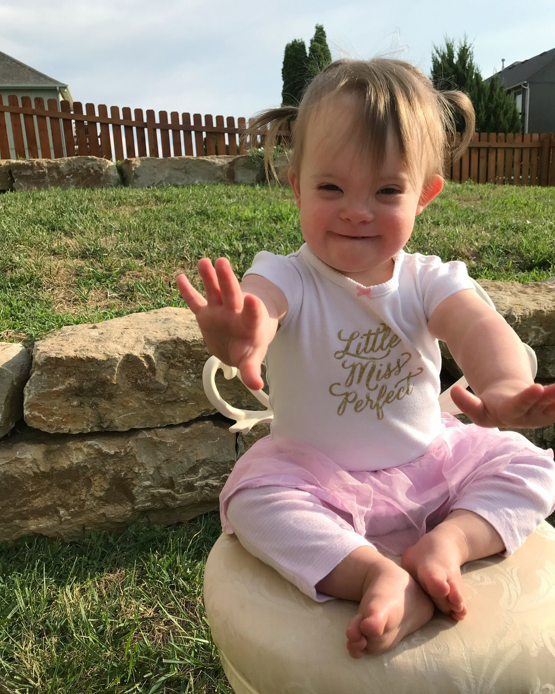

Kara
America Down syndromeKara is a 2 year old sweetheart with big, beautiful eyes and a bright spirit! She loves to dance, use sign-language, read her books & eat chicken straight off the bone. She makes us smile every single day and blows us away with all of her accomplishments.
We got a prenatal diagnosis of Down syndrome early in our pregnancy and had no idea what our lives would be like as we welcomed our girl into the world. There was no one that could prepare me for the amount of LOVE that is felt in our home. She is the sweetest thing that has ever happened to us, which is why she is our Baby Lemonade.
Get involved Back to all stories